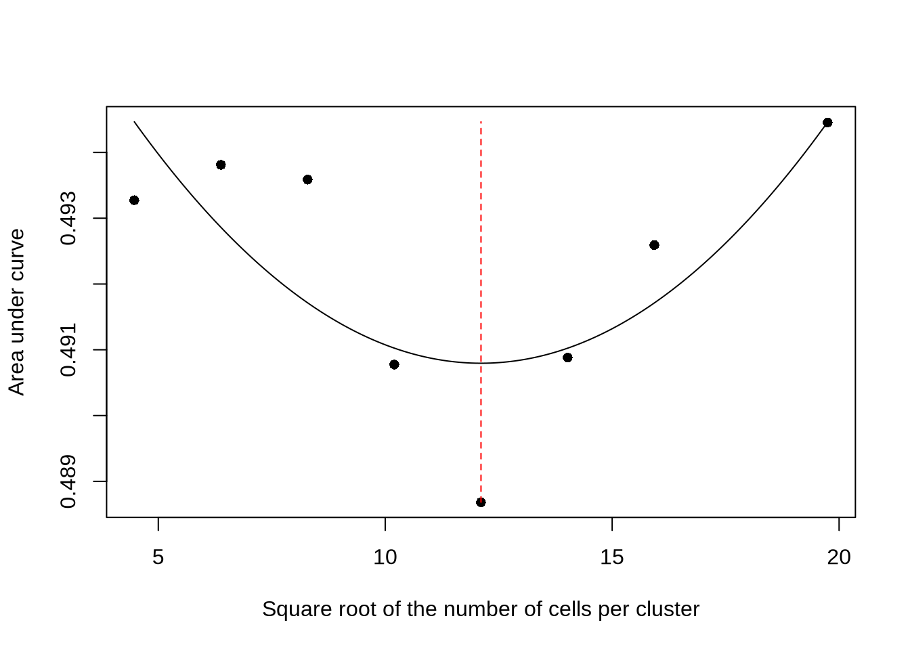
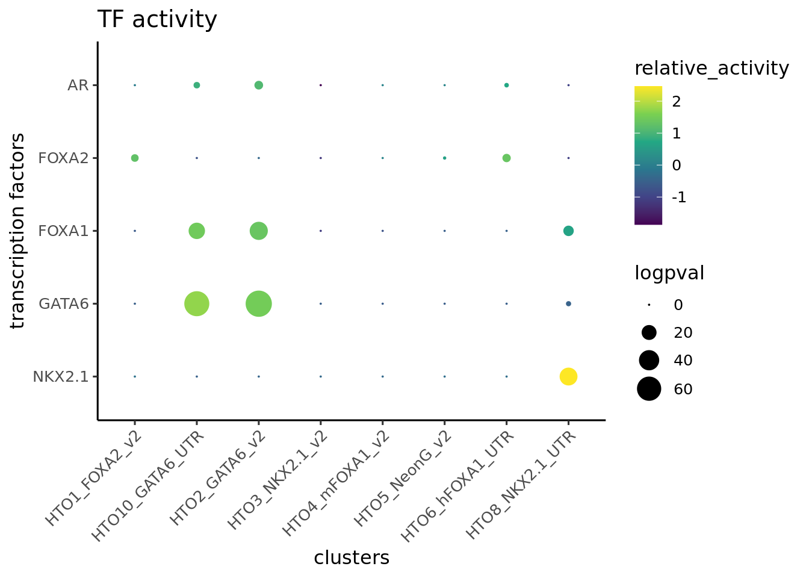
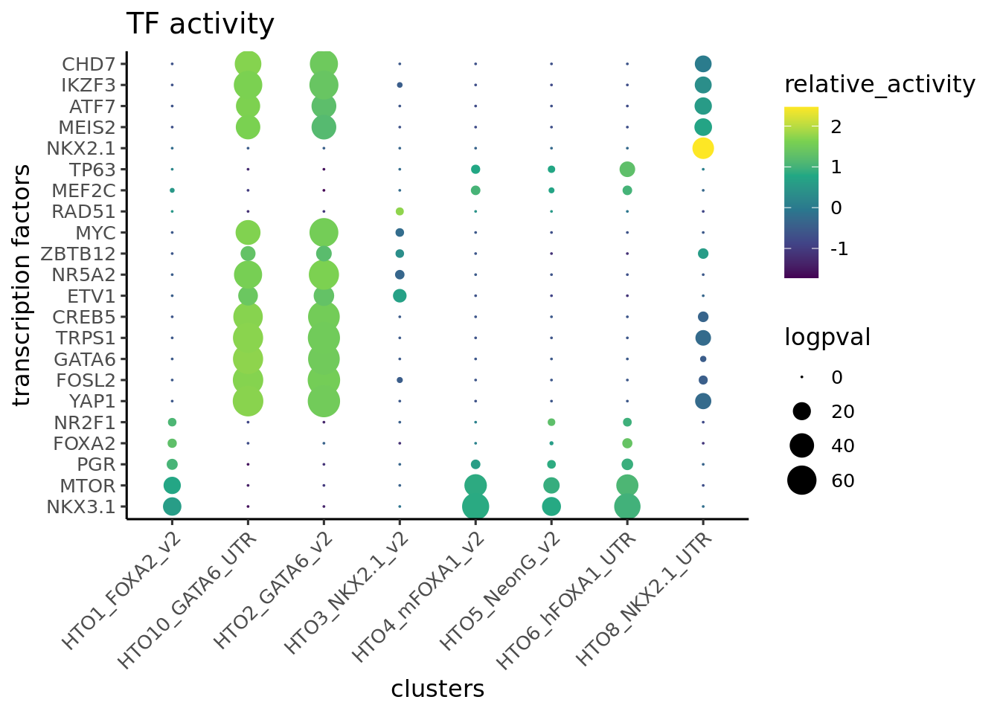
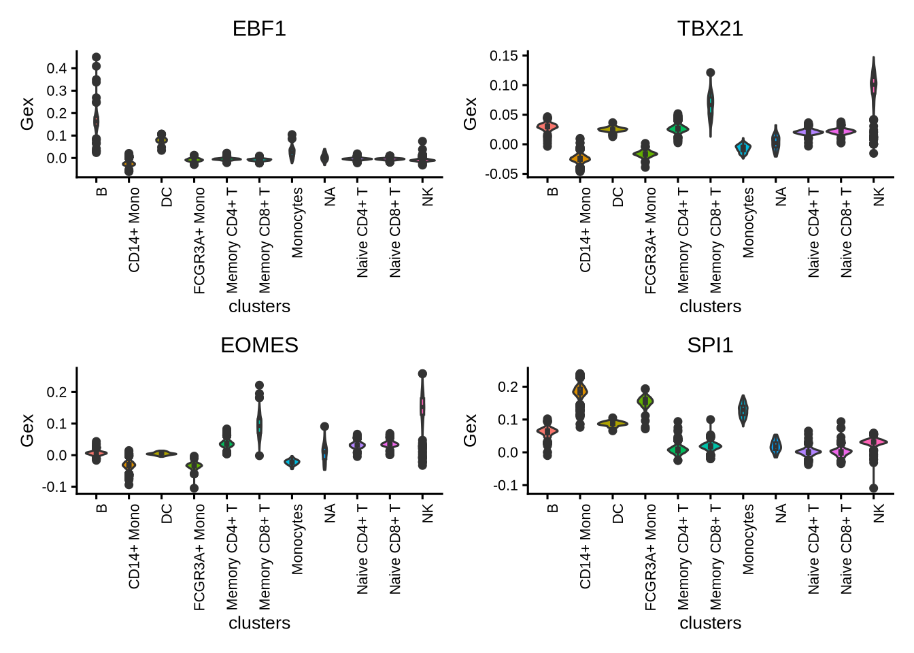
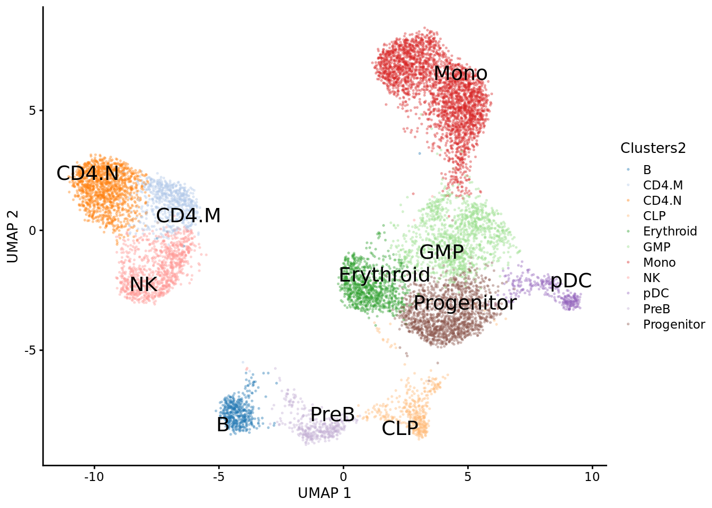
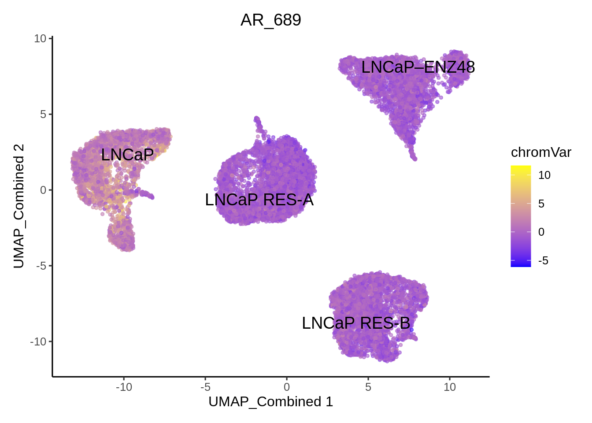
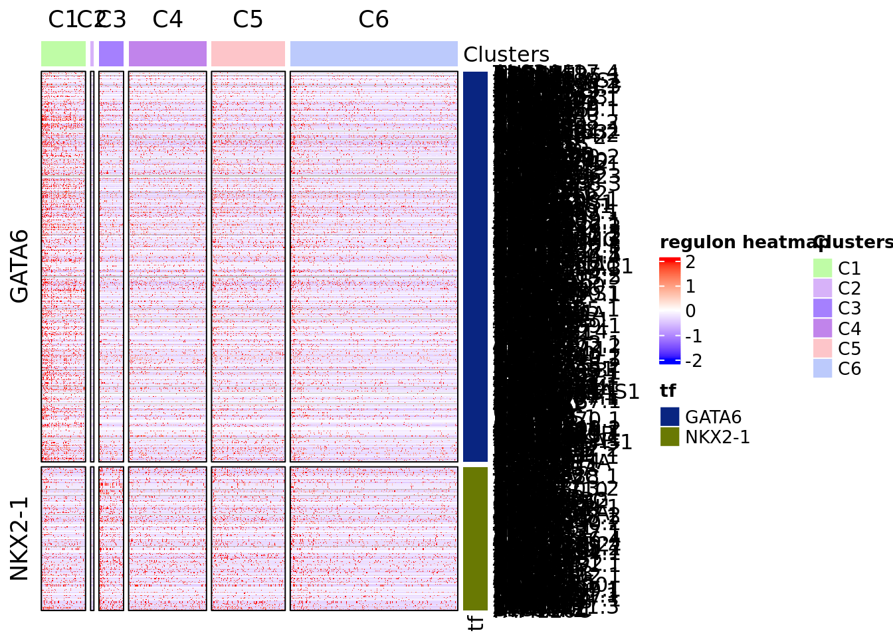
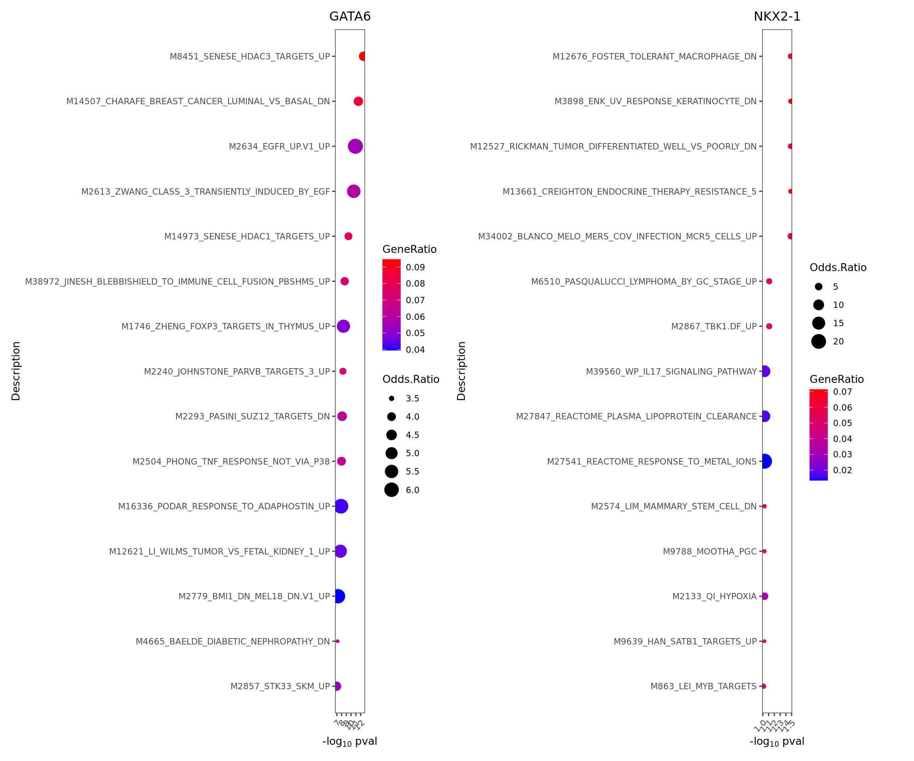
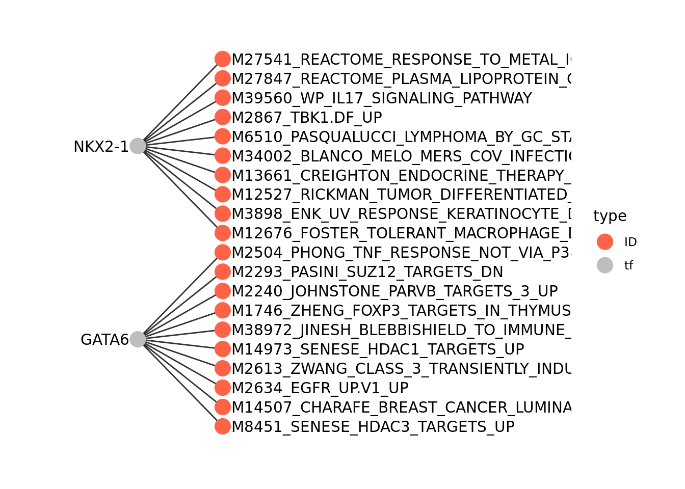

2 Basic workflow with MultiAssayExperiment
In this chapter, we illustrate the epiregulon workflow starting from data in the form of SingleCellExperiment objects using the correlation weight estimation method.
This is a dataset generated by infecting LNCaP cells with NKX2-1, GATA6 and FOXA2 to examine the effects of these TFs on AR activity using a technique called reprogram-seq.
2.1 Data preparation
Single cell preprocessing needs to performed by user’s favorite methods prior to using Epiregulon. The following components are required:
1. Peak matrix from scATAC-seq
2. Gene expression matrix from either paired or unpaired scRNA-seq. RNA-seq integration needs to be performed for unpaired dataset.
3. Dimensionality reduction matrix from with either single modalities or joint scRNA-seq and scATAC-seq
In this case, we have preprocessed the data and converted the archR project into a MAE object using the function epiregulon.archr::archr2MAE and made the data available through the scMultiome package
# load the MAE object
library(scMultiome)
mae <- scMultiome::reprogramSeq()
# peak matrix
PeakMatrix <- mae[["PeakMatrix"]]
# expression matrix
GeneExpressionMatrix <- mae[["GeneExpressionMatrix"]]
rownames(GeneExpressionMatrix) <- rowData(GeneExpressionMatrix)$name
# dimensional reduction matrix
reducedDimMatrix <- reducedDim(mae[['TileMatrix500']], "LSI_ATAC")Visualize the SingleCellExperiment by UMAP
# transfer UMAP_combined from TileMatrix to GeneExpressionMatrix
reducedDim(GeneExpressionMatrix, "UMAP_Combined") <- reducedDim(mae[['TileMatrix500']], "UMAP_Combined")
scater::plotReducedDim(GeneExpressionMatrix,
dimred = "UMAP_Combined",
text_by = "Clusters",
colour_by = "Clusters")
2.2 Retrieve bulk TF ChIP-seq binding sites
First, we retrieve the information of TF binding sites collected from Cistrome and ENCODE ChIP-seq, which are available through the scMultiome package . Currently, human genomes hg19 and hg38 and mouse mm10 are available.
## snapshotDate(): 2024-01-17## see ?scMultiome and browseVignettes('scMultiome') for documentation## loading from cache## GRangesList object of length 1558:
## $`5-hmC`
## GRanges object with 24048 ranges and 0 metadata columns:
## seqnames ranges strand
## <Rle> <IRanges> <Rle>
## [1] chr1 10000-10685 *
## [2] chr1 13362-13694 *
## [3] chr1 29631-29989 *
## [4] chr1 40454-40754 *
## [5] chr1 135395-135871 *
## ... ... ... ...
## [24044] chrY 56864377-56864627 *
## [24045] chrY 56876124-56876182 *
## [24046] chrM 84-2450 *
## [24047] chrM 13613-14955 *
## [24048] chrM 15134-16490 *
## -------
## seqinfo: 25 sequences from an unspecified genome; no seqlengths
##
## ...
## <1557 more elements>2.3 Link ATAC-seq peaks to target genes
Next, we compute peak to gene correlations using a custom algorithm that has similar performance to ArchR’s P2G function.
set.seed(1010)
p2g <- calculateP2G(peakMatrix = PeakMatrix,
expMatrix = GeneExpressionMatrix,
reducedDim = reducedDimMatrix,
exp_assay = "normalizedCounts")## Using epiregulon to compute peak to gene links...## performing k means clustering to form metacells## Computing correlation## DataFrame with 25693 rows and 8 columns
## idxATAC chr start end idxRNA target Correlation distance
## <integer> <character> <integer> <integer> <integer> <array> <matrix> <integer>
## 1 1 chr1 817121 817621 19 FAM41C 0.505457 50578
## 2 6 chr1 869650 870150 14 AL669831.2 0.614009 108540
## 3 10 chr1 920987 921487 19 FAM41C 0.662441 50587
## 4 22 chr1 960317 960817 19 FAM41C 0.635411 89917
## 5 22 chr1 960317 960817 28 PERM1 0.614227 18210
## ... ... ... ... ... ... ... ... ...
## 25689 126586 chrX 155071227 155071727 36422 MTCP1 0.504839 0
## 25690 126590 chrX 155228844 155229344 36426 CLIC2 0.830640 103268
## 25691 126592 chrX 155334445 155334945 36426 CLIC2 0.529991 0
## 25692 126596 chrX 155820104 155820604 36436 VAMP7 0.629908 58739
## 25693 126599 chrX 155897986 155898486 36436 VAMP7 0.505036 164422.4 Add TF motif binding to peaks
The next step is to add the TF binding information by overlapping regions of the peak matrix with the bulk chip-seq database loaded in 2. The user can supply either an archR project path and this function will retrieve the peak matrix, or a peakMatrix in the form of a Granges object or RangedSummarizedExperiment.
## Computing overlap...## Success!## idxATAC idxTF tf
## 1 1 2 5-mC
## 2 1 22 AML1-ETO
## 3 1 25 AR
## 4 1 49 ATF1
## 5 1 50 ATF2
## 6 1 51 ATF32.5 Generate regulons
A long format data frame, representing the inferred regulons, is then generated. The data frame consists of three important columns:
- tf (transcription factor)
- target gene
- peak to gene correlation between tf and target gene
## DataFrame with 3187407 rows and 10 columns
## idxATAC chr start end idxRNA target distance idxTF tf corr
## <integer> <character> <integer> <integer> <integer> <character> <integer> <integer> <character> <matrix>
## 1 1 chr1 817121 817621 19 FAM41C 50578 2 5-mC 0.505457
## 2 1 chr1 817121 817621 19 FAM41C 50578 22 AML1-ETO 0.505457
## 3 1 chr1 817121 817621 19 FAM41C 50578 25 AR 0.505457
## 4 1 chr1 817121 817621 19 FAM41C 50578 49 ATF1 0.505457
## 5 1 chr1 817121 817621 19 FAM41C 50578 50 ATF2 0.505457
## ... ... ... ... ... ... ... ... ... ... ...
## 3187403 126599 chrX 155897986 155898486 36436 VAMP7 16442 436 HOXB13 0.505036
## 3187404 126599 chrX 155897986 155898486 36436 VAMP7 16442 669 NANOG 0.505036
## 3187405 126599 chrX 155897986 155898486 36436 VAMP7 16442 762 ONECUT2 0.505036
## 3187406 126599 chrX 155897986 155898486 36436 VAMP7 16442 1044 SUMO2 0.505036
## 3187407 126599 chrX 155897986 155898486 36436 VAMP7 16442 1116 TLE3 0.5050362.6 Network pruning (highly recommended)
Epiregulon prunes the network by performing tests of independence on the observed number of cells jointly expressing transcription factor (TF), regulatory element (RE) and target gene (TG) vs the expected number of cells if TF/RE and TG are independently expressed. We implement two tests, the binomial test and the chi-square test. In the binomial test, the expected probability is P(TF, RE) * P(TG), and the number of trials is the total number of cells, and the observed successes is the number of cells jointly expressing all three elements. In the chi-square test, the expected probability for having all 3 elements active is also P(TF, RE) * P(TG) and the probability otherwise is 1- P(TF, RE) * P(TG). The observed cell count for the active category is the number of cells jointly expressing all three elements, and the cell count for the inactive category is n - n_triple.
We calculate cluster-specific p-values if users supply cluster labels. This is useful if we are interested in cluster-specific networks. The pruned regulons can then be used to visualize differential networks for transcription factors of interest. See section on differential networks.
pruned.regulon <- pruneRegulon(expMatrix = GeneExpressionMatrix,
exp_assay = "normalizedCounts",
peakMatrix = PeakMatrix,
peak_assay = "counts",
test = "chi.sq",
regulon,
clusters = GeneExpressionMatrix$Clusters,
prune_value = "pval",
regulon_cutoff = 0.05
)## pruning network with chi.sq tests using a regulon cutoff of pval<0.05## pruning regulons## DataFrame with 522788 rows and 13 columns
## idxATAC chr start end idxRNA target distance idxTF tf corr pval
## <integer> <character> <integer> <integer> <integer> <character> <integer> <integer> <character> <matrix> <matrix>
## 1 22 chr1 960317 960817 28 PERM1 18210 5 ADNP 0.614227 0.106264786:0.8357430:1:...
## 2 56 chr1 1124416 1124916 40 AL390719.2 42439 5 ADNP 0.582570 0.130376176:0.9242106:1:...
## 3 122 chr1 1375717 1376217 61 CCNL2 12724 5 ADNP 0.616679 0.189979998:0.0242908:1:...
## 4 631 chr1 7961380 7961880 210 AL034417.4 27252 5 ADNP 0.552592 0.112531104:0.4154439:1:...
## 5 655 chr1 8061169 8061669 208 TNFRSF9 120104 5 ADNP 0.780316 0.000579039:0.1049407:1:...
## ... ... ... ... ... ... ... ... ... ... ... ...
## 522784 123295 chr9 127937015 127937515 34999 ENG 89649 1557 ZXDC 0.719295 5.28805e-04:0.9463687:1:...
## 522785 123404 chr9 128829592 128830092 35051 NUP188 115605 1557 ZXDC 0.590378 8.86947e-03:0.0386721:1:...
## 522786 123437 chr9 129110677 129111177 35062 AL158151.3 62628 1557 ZXDC 0.636463 3.89737e-06:0.8587396:1:...
## 522787 124017 chr9 136847262 136847762 35226 TMEM141 55719 1557 ZXDC 0.575078 4.78049e-02:0.2373499:1:...
## 522788 125706 chrX 107206372 107206872 36012 NUP62CL 0 1557 ZXDC 0.608867 1.65029e-01:0.8157342:1:...
## stats qval
## <matrix> <matrix>
## 1 2.60891:0.04299061:0:... 1:1:1:...
## 2 2.28802:0.00904996:0:... 1:1:1:...
## 3 1.71777:5.07374677:0:... 1:1:1:...
## 4 2.51831:0.66316759:0:... 1:1:1:...
## 5 11.84218:2.62880407:0:... 1:1:1:...
## ... ... ...
## 522784 12.01125:0.00452493:0:... 1:1:1:...
## 522785 6.84892:4.27521247:0:... 1:1:1:...
## 522786 21.31467:0.03167648:0:... 1:1:1:...
## 522787 3.91683:1.39626547:0:... 1:1:1:...
## 522788 1.92753:0.05430531:0:... 1:1:1:...2.7 Add Weights
While the `pruneRegulon’ function provides statistics on the joint occurrence of TF-RE-TG, we would like to further estimate the strength of regulation. Biologically, this can be interpreted as the magnitude of gene expression changes induced by transcription factor activity. Epiregulon estimates the regulatory potential using one of the three measures: 1) correlation between TG and TF or between TG and the product of TF and RE, 2) mutual information between TG and TF expression or between TG and the product of TF and RE, or 3) Wilcoxon test statistics of target gene expression in cells jointly expressing all 3 elements vs cells that do not.
Two measures (correlation and Wilcoxon) give both the magnitude and directionality of changes whereas mutational information is always positive. The correlation and mutual information statistics are computed on grouped pseudobulks by user-supplied cluster labels and yield a single weight across all clusters per each TF-RE-target triplet. In contrast, the Wilcoxon method group cells based on the joint expression of TF, RE and TG in each single cell or in cell aggregates. If cell labels are provided, we calculate cluster-specific weights in addition to estimating weights from all the cells. Cell aggregation uses a default value of 10 cells and can help overcome sparsity and speed up computation. If cluster labels are provided, we can obtain weights of individual clusters and all cells combined. In this example, we apply Wilcoxon test on cell aggregates of 10 cells.
In this example, we illustrate weight estimation using the correlation method. We chose correlation as the weight estimation because we reasoned that the increase in TF activity is driven by the overexpression of the TF, and thus its target genes should see a corresponding change in their expression.
When tf_re.merge is set to TRUE, we compute weight based on the correlation between TG gene expression and the product of the TF gene expression and RE chromatin accessibility. If tf_re.merge is set to FALSE, we do not take into account the RE chromatin accessibility and the correlation is computed only based on the correlation between TG gene expression and TF gene expression. Here, we set tf_re.merge to TRUE because we are interested in target genes whose gene expression and chromatin accessibility at the regulatory elements change concordantly with the expression of their putative transcription factors.
2.8 (Optional) Annotate with TF motifs
So far the gene regulatory network was constructed from TF ChIP-seq exclusively. Some users would prefer to further annotate the regulatory elements with the presence of motifs. We provide an option to annotate peaks with motifs from the Cisbp database. If motifs are available for a factor and the RE contains a motif, we return 1. If motifs are available and the RE does not contain a motif, we return 0. If no motifs are known for this particular factor (as in the case of co-factors or chromatin modifiers), we return NA.
In this example, while we illustrate the possibility of annotating regulons with motifs, we contain the remaining workflow with the full regulons regulon.w. It is important to note that filtering for the presence of motifs removes a large fraction of the target genes because motifs are often present in a small subset of the ChIP-seq peaks (can be as low as 10%). Second, indirect TF binding, possibly through its interaction partners, may have a true biological function. However, if the user would prefer to retain only target genes with REs containing the motif of the TFs, they should proceed with regulon.w.motif.
regulon.w.motif <- addMotifScore(regulon = regulon.w,
peaks = rowRanges(PeakMatrix),
species = "human",
genome = "hg38")## annotating peaks with motifs## ##
## Attaching package: 'Biostrings'## The following object is masked from 'package:base':
##
## strsplit##
## Attaching package: 'rtracklayer'## The following object is masked from 'package:BiocIO':
##
## FileForFormat## The following object is masked from 'package:AnnotationHub':
##
## hubUrl2.9 Calculate TF activity
Finally, the activities for a specific TF in each cell are computed by averaging expressions of target genes linked to the TF weighted by the test statistics of choice, chosen from either correlation, mutual information or Wilcoxon test statistics. \[y=\frac{1}{n}\sum_{i=1}^{n} x_i * weights_i\] where \(y\) is the activity of a TF for a cell \(n\) is the total number of targets for a TF \(x_i\) is the log count expression of target i where i in {1,2,…,n} \(weights_i\) is the weight of TF and target i
score.combine <- calculateActivity(expMatrix = GeneExpressionMatrix,
regulon = regulon.w,
mode = "weight",
method = "weightedMean",
exp_assay = "normalizedCounts",
normalize = FALSE)## calculating TF activity from regulon using weightedmean## aggregating regulons...## creating weight matrix...## calculating activity scores...## normalize by the number of targets...2.10 Perform differential activity
library(epiregulon.extra)
markers <- findDifferentialActivity(activity_matrix = score.combine,
groups = GeneExpressionMatrix$hash_assignment,
pval.type = "some",
direction = "up",
test.type = "t")## Warning: The `groups` argument of `findDifferentialActivity()` is deprecated as of epiregulon.extra 0.99.0.
## ℹ Please use the `clusters` argument instead.
## This warning is displayed once every 8 hours.
## Call `lifecycle::last_lifecycle_warnings()` to see where this warning was generated.Take the top TFs
## Using a logFC cutoff of 0.2 for class HTO10_GATA6_UTR## Using a logFC cutoff of 0 for class HTO1_FOXA2_v2## Using a logFC cutoff of 0.2 for class HTO2_GATA6_v2## Using a logFC cutoff of 0 for class HTO3_NKX2.1_v2## Using a logFC cutoff of 0 for class HTO4_mFOXA1_v2## Using a logFC cutoff of 0 for class HTO5_NeonG_v2## Using a logFC cutoff of 0 for class HTO6_hFOXA1_UTR## Using a logFC cutoff of 0 for class HTO8_NKX2.1_UTR2.11 Visualize the results
First visualize the known differential TFs by bubble plot
plotBubble(activity_matrix = score.combine,
tf = c("NKX2-1","GATA6","FOXA1","FOXA2", "AR"),
clusters = GeneExpressionMatrix$hash_assignment)
Then visualize the most differential TFs by clusters
plotBubble(activity_matrix = score.combine,
tf = markers.sig$tf,
clusters = GeneExpressionMatrix$hash_assignment)
Visualize the known differential TFs by violin plot.
plotActivityViolin(activity_matrix = score.combine,
tf = c("NKX2-1","GATA6","FOXA1","FOXA2", "AR"),
clusters = GeneExpressionMatrix$hash_assignment)
Visualize the known differential TFs by UMAP
plotActivityDim(sce = GeneExpressionMatrix,
activity_matrix = score.combine,
tf = c("NKX2-1","GATA6","FOXA1","FOXA2", "AR"),
dimtype = "UMAP_Combined",
label = "Clusters",
point_size = 1,
ncol = 3)
In contrast, the gene expression of the TFs is very sparse
plotActivityDim(sce = GeneExpressionMatrix,
activity_matrix = counts(GeneExpressionMatrix),
tf = c("NKX2-1","GATA6","FOXA1","FOXA2", "AR"),
dimtype = "UMAP_Combined",
label = "Clusters",
point_size = 1,
ncol = 3,
limit = c(0,2),
colors = c("grey","blue"),
legend.label = "GEX")
Visualize the gene expression of the regulons by heatmap
plotHeatmapRegulon(sce=GeneExpressionMatrix,
tfs=c("GATA6","NKX2-1"),
regulon=regulon.w,
regulon_cutoff=0.1,
downsample=1000,
cell_attributes="Clusters",
col_gap="Clusters",
exprs_values="counts",
name="regulon heatmap")
plotHeatmapActivity(activity=score.combine,
sce=GeneExpressionMatrix,
tfs=rownames(score.combine),
downsample=5000,
cell_attributes="Clusters",
col_gap="Clusters",
name = "Activity")
2.12 Geneset enrichment
Sometimes we are interested to know what pathways are enriched in the regulon of a particular TF. We can perform geneset enrichment using the enricher function from clusterProfiler.
#retrieve genesets
H <- EnrichmentBrowser::getGenesets(org = "hsa",
db = "msigdb",
cat = "H",
gene.id.type = "SYMBOL" )## Using cached version from 2024-01-15 21:34:50C2 <- EnrichmentBrowser::getGenesets(org = "hsa",
db = "msigdb",
cat = "C2",
gene.id.type = "SYMBOL" )## Using cached version from 2024-01-15 21:34:58C6 <- EnrichmentBrowser::getGenesets(org = "hsa",
db = "msigdb",
cat = "C6",
gene.id.type = "SYMBOL" )## Using cached version from 2024-01-15 21:35:00#combine genesets and convert genesets to be compatible with enricher
gs <- c(H, C2, C6)
gs.list <- do.call(rbind,lapply(names(gs), function(x)
{data.frame(gs=x, genes=gs[[x]])}))
enrichresults <- regulonEnrich(TF = c("GATA6","NKX2-1"),
regulon = regulon.w,
weight = "weight",
weight_cutoff = 0,
genesets = gs.list)## GATA6## NKX2-1
2.13 Network analysis
We can visualize the genesets as a network
plotGseaNetwork(tf = names(enrichresults),
enrichresults = enrichresults,
p.adj_cutoff = 0.1,
ntop_pathways = 10)
2.14 Session Info
## R Under development (unstable) (2023-12-04 r85659)
## Platform: x86_64-pc-linux-gnu
## Running under: Ubuntu 18.04.6 LTS
##
## Matrix products: default
## BLAS: /usr/local/lib/R/lib/libRblas.so
## LAPACK: /usr/local/lib/R/lib/libRlapack.so; LAPACK version 3.11.0
##
## locale:
## [1] LC_CTYPE=en_US.UTF-8 LC_NUMERIC=C LC_TIME=C LC_COLLATE=C LC_MONETARY=C LC_MESSAGES=C
## [7] LC_PAPER=C LC_NAME=C LC_ADDRESS=C LC_TELEPHONE=C LC_MEASUREMENT=C LC_IDENTIFICATION=C
##
## time zone: Etc/UTC
## tzcode source: system (glibc)
##
## attached base packages:
## [1] stats4 stats graphics grDevices utils datasets methods base
##
## other attached packages:
## [1] msigdbr_7.5.1 epiregulon.extra_0.99.1 BSgenome.Hsapiens.UCSC.hg38_1.4.5 BSgenome_1.71.1
## [5] rtracklayer_1.63.0 BiocIO_1.13.0 Biostrings_2.71.1 XVector_0.43.1
## [9] epiregulon_1.0.38 scMultiome_1.3.0 SingleCellExperiment_1.25.0 MultiAssayExperiment_1.29.0
## [13] SummarizedExperiment_1.33.2 Biobase_2.63.0 GenomicRanges_1.55.1 GenomeInfoDb_1.39.5
## [17] IRanges_2.37.0 S4Vectors_0.41.3 MatrixGenerics_1.15.0 matrixStats_1.2.0
## [21] ExperimentHub_2.11.1 AnnotationHub_3.11.1 BiocFileCache_2.11.1 dbplyr_2.4.0
## [25] BiocGenerics_0.49.1
##
## loaded via a namespace (and not attached):
## [1] fs_1.6.3 bitops_1.0-7 enrichplot_1.23.1 DirichletMultinomial_1.45.0 TFBSTools_1.41.0
## [6] HDO.db_0.99.1 httr_1.4.7 RColorBrewer_1.1-3 doParallel_1.0.17 Rgraphviz_2.47.0
## [11] tools_4.4.0 backports_1.4.1 utf8_1.2.4 R6_2.5.1 HDF5Array_1.31.1
## [16] lazyeval_0.2.2 rhdf5filters_1.15.1 GetoptLong_1.0.5 withr_3.0.0 gridExtra_2.3
## [21] cli_3.6.2 Cairo_1.6-2 scatterpie_0.2.1 labeling_0.4.3 sass_0.4.8
## [26] KEGGgraph_1.63.0 readr_2.1.5 Rsamtools_2.19.2 yulab.utils_0.1.3 gson_0.1.0
## [31] DOSE_3.29.2 R.utils_2.12.3 scater_1.31.1 limma_3.59.1 rstudioapi_0.15.0
## [36] RSQLite_2.3.4 gridGraphics_0.5-1 generics_0.1.3 shape_1.4.6 gtools_3.9.5
## [41] dplyr_1.1.4 GO.db_3.18.0 Matrix_1.6-4 ggbeeswarm_0.7.2 fansi_1.0.6
## [46] abind_1.4-5 R.methodsS3_1.8.2 lifecycle_1.0.4 yaml_2.3.8 edgeR_4.1.10
## [51] rhdf5_2.47.2 qvalue_2.35.0 SparseArray_1.3.3 grid_4.4.0 blob_1.2.4
## [56] dqrng_0.3.2 crayon_1.5.2 lattice_0.22-5 beachmat_2.19.0 cowplot_1.1.2
## [61] annotate_1.81.1 KEGGREST_1.43.0 magick_2.8.2 pillar_1.9.0 knitr_1.45
## [66] ComplexHeatmap_2.19.0 metapod_1.11.1 fgsea_1.29.0 rjson_0.2.21 codetools_0.2-19
## [71] fastmatch_1.1-4 glue_1.7.0 ggfun_0.1.3 data.table_1.14.10 treeio_1.27.0
## [76] vctrs_0.6.5 png_0.1-8 gtable_0.3.4 poweRlaw_0.70.6 cachem_1.0.8
## [81] xfun_0.41 S4Arrays_1.3.2 mime_0.12 tidygraph_1.3.0 pracma_2.4.4
## [86] iterators_1.0.14 statmod_1.5.0 bluster_1.13.0 nlme_3.1-164 ggtree_3.11.0
## [91] bit64_4.0.5 filelock_1.0.3 bslib_0.6.1 irlba_2.3.5.1 vipor_0.4.7
## [96] colorspace_2.1-0 seqLogo_1.69.0 DBI_1.2.1 tidyselect_1.2.0 bit_4.0.5
## [101] compiler_4.4.0 curl_5.2.0 graph_1.81.0 BiocNeighbors_1.21.2 DelayedArray_0.29.0
## [106] shadowtext_0.1.2 bookdown_0.37 checkmate_2.3.1 scales_1.3.0 caTools_1.18.2
## [111] rappdirs_0.3.3 stringr_1.5.1 digest_0.6.34 motifmatchr_1.25.0 rmarkdown_2.25
## [116] htmltools_0.5.7 pkgconfig_2.0.3 sparseMatrixStats_1.15.0 highr_0.10 fastmap_1.1.1
## [121] rlang_1.1.3 GlobalOptions_0.1.2 DelayedMatrixStats_1.25.1 farver_2.1.1 jquerylib_0.1.4
## [126] jsonlite_1.8.8 BiocParallel_1.37.0 GOSemSim_2.29.0 R.oo_1.25.0 BiocSingular_1.19.0
## [131] RCurl_1.98-1.14 magrittr_2.0.3 ggplotify_0.1.2 scuttle_1.13.0 GenomeInfoDbData_1.2.11
## [136] patchwork_1.2.0 Rhdf5lib_1.25.1 munsell_0.5.0 Rcpp_1.0.12 ape_5.7-1
## [141] babelgene_22.9 viridis_0.6.4 EnrichmentBrowser_2.33.1 stringi_1.8.3 ggraph_2.1.0
## [146] MASS_7.3-60.1 zlibbioc_1.49.0 plyr_1.8.9 parallel_4.4.0 ggrepel_0.9.5
## [151] CNEr_1.39.0 graphlayouts_1.0.2 splines_4.4.0 hms_1.1.3 circlize_0.4.15
## [156] locfit_1.5-9.8 igraph_1.6.0 reshape2_1.4.4 ScaledMatrix_1.11.0 TFMPvalue_0.0.9
## [161] BiocVersion_3.19.1 XML_3.99-0.16 evaluate_0.23 scran_1.31.0 BiocManager_1.30.22
## [166] tweenr_2.0.2 tzdb_0.4.0 foreach_1.5.2 polyclip_1.10-6 tidyr_1.3.0
## [171] purrr_1.0.2 clue_0.3-65 ggplot2_3.4.4 ggforce_0.4.1 rsvd_1.0.5
## [176] xtable_1.8-4 restfulr_0.0.15 tidytree_0.4.6 viridisLite_0.4.2 tibble_3.2.1
## [181] aplot_0.2.2 clusterProfiler_4.11.0 memoise_2.0.1 beeswarm_0.4.0 AnnotationDbi_1.65.2
## [186] GenomicAlignments_1.39.2 cluster_2.1.6 GSEABase_1.65.1 BiocStyle_2.31.0